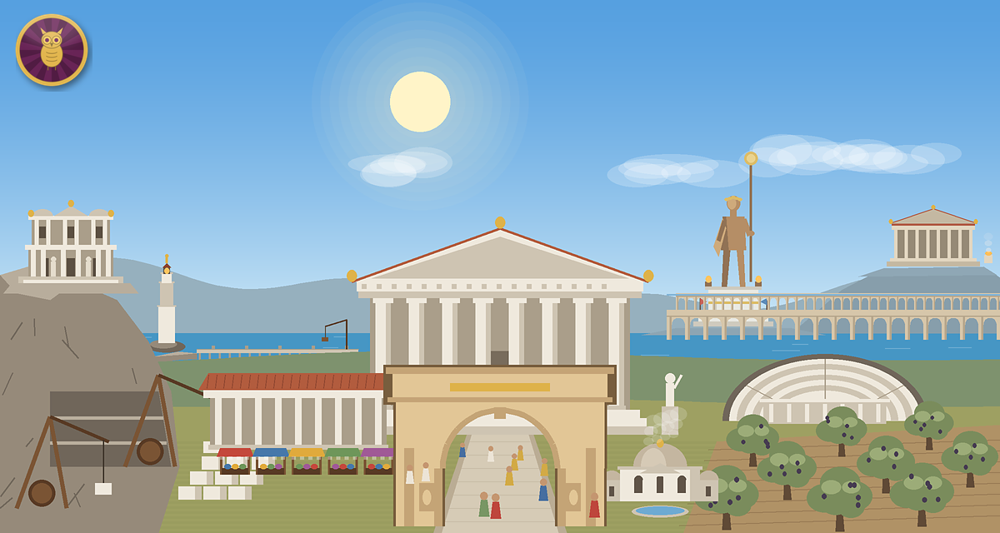
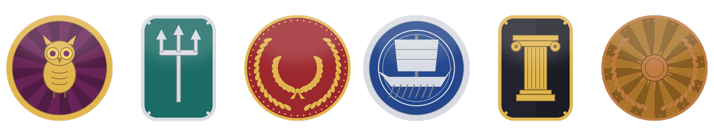
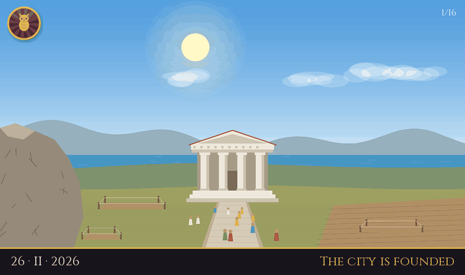
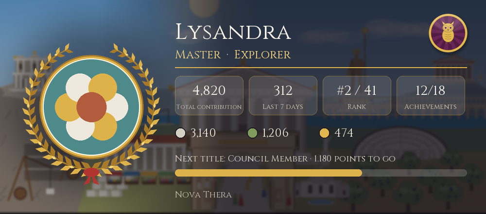
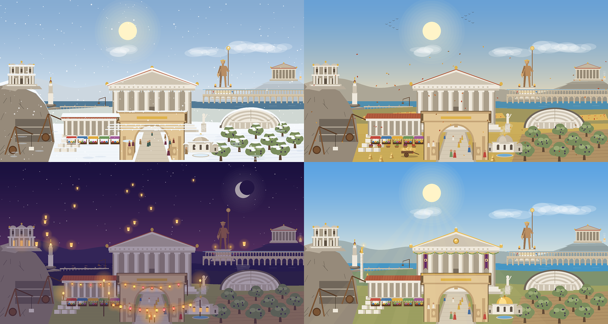
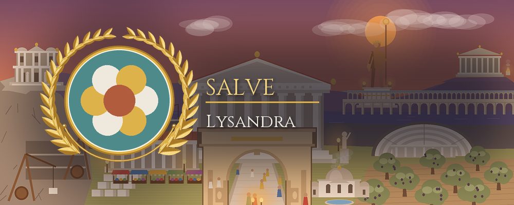
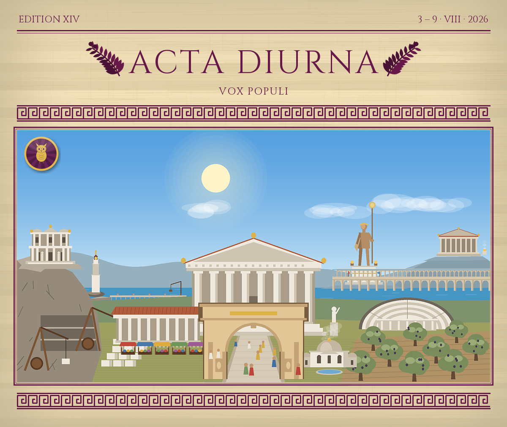

Civita Premium
Civita is free and will stay free. Premium is an optional subscription for one Discord server: it makes your city look better, gives your community new moments and gives admins more tools. It never gives a gameplay advantage.

Every picture is drawn by Civita itself; these come from an imaginary example city.

New
Design a crest of your own: a Greek round shield, a Roman shield or a coin medallion; eight symbols like an owl, a ship or a column, a field colour, gold, silver or bronze and a pattern. It sits like a seal in the corner of the city picture: in /city, the gazette, the showcase and on citizen cards.

New
/chronicle draws an animated picture of every construction from the city's founding to today, frame by frame, with the date and the building. A keepsake to share with your community; the story grows with the city.

New
/profile becomes a picture card: the avatar over the city, title and profession, points, rank, badges, contributions and progress to the next title. Every member of the server can use it.
New
Members save their birthday (day and month only, no ages). That morning the city celebrates in the announcement channel and can give a role for the day.
One person buys it, the whole server enjoys it.
$3.99 / month
For one server. Cancel any time.
2 months free
$39 / year
For one server. Same features, better price.
You can preview the themes, the crest, the welcome card and the gazette cover in the dashboard before buying. Purchases are made in the dashboard too and open very soon. Prices are in US dollars; VAT may be added at checkout depending on your country.
Sixteen features, all in one subscription.
Your own crest on an ancient shield or medallion, in the corner of the city picture.
A shareable animated picture of every construction since the founding.
/profile as a picture card: title, profession, points and the city crest.
The city celebrates its citizens' birthdays in the morning, with an optional role for the day.
Dress your city in a snowy winter, a golden harvest, lantern nights or a golden age; pick the banner colour yourself.
Your city comes alive in /city and on the showcase: citizens walk, banners wave, torches flicker; fireworks on festival nights, snow in winter.
A golden laurel crown, an olive branch, a meander or a sun crown; gold, silver or bronze; a title in ancient letters and your own background.
The weekly gazette gets an ancient front page: your own name and motto, papyrus, marble or basalt paper, ancient inks.
Saved messages go out on their own at the time you pick: once, daily, weekly or monthly.
Turn saved messages into server-only slash commands like /rules or /event (up to 20).
Five role menus instead of one: games, colours, notifications, each in its own channel.
Search by date range, export to Excel and see a summary per moderator.
A golden frame, a cover ornament and a short address like /c/your-city for your page in the world ranking.
A cover image and bio on Civita's profile card, just for your server.
The dashboard charts go back a full year instead of 90 days.
Buildings, the Council, expeditions, the World Wonder, the Great Games, professions, the museum: all stay free for everyone.



| Free | Premium | |
|---|---|---|
| City game: buildings, the Council, events, expeditions, artifacts, festivals, the gazette | ✓ | ✓ |
| World Wonder, Great Games, professions, museum exhibitions | ✓ | ✓ |
| World ranking and sister cities | ✓ | ✓ |
| Server tools: welcome, verification, moderation, tickets, role menu | ✓ | ✓ |
| Web dashboard | ✓ | ✓ |
| City crest | — | ✓ |
| The City's Story (/chronicle) | — | ✓ |
| /profile | Text | Picture citizen card |
| Birthday celebrations | — | ✓ and a role for the day |
| Statistics | 7 / 30 / 90 days | Up to 1 year |
| City picture | Time of day and festivals | + themes and banner colour |
| City picture in /city | Still | Animated |
| Welcome card | Laurel wreath | 5 frames, 3 metals, a title, your own background |
| Weekly gazette | City picture | Front page with your own name, paper and ink |
| Message editor | Send now | + scheduled and repeating |
| Custom slash commands | — | Up to 20 |
| Role menus | 1 menu | Up to 5 |
| Moderation history | Full history, search and filters | + date range, Excel export, moderator summary |
| Showcase page | Standard | Golden frame, cover, short address |
| Cover and bio on Civita's profile card | Standard | Your choice |
| Production, prestige, rewards | Same | Same (no advantage) |
No. Premium cities produce exactly the same as free ones, earn the same rewards and get no extra prestige; the world ranking and the Great Games stay fair.
Yes. On the dashboard's Premium page you can preview the themes, the city crest, the welcome card and the gazette cover. Saving them needs Premium.
No. Everything that is free today stays free.
Per server. One admin buys it and everyone on that server enjoys it. If you have several servers, each needs its own subscription.
Payments are handled by our reseller Lemon Squeezy (the "merchant of record"). Your card details go to them and never reach Civita. Your receipt comes by email.
Cancel any time from the dashboard or from the link in your receipt. Premium stays on until the end of the period you paid for and does not renew.
Yes. If Premium isn't for you, email us within 14 days of your first payment and we'll refund it in full.
No. Your crest, theme, card and gazette settings are kept; they all come back when you turn Premium on again.
Premium belongs to the server. If you add Civita back while your subscription is running, everything comes back.
Open the Premium page in the dashboard, design your crest, try the themes.